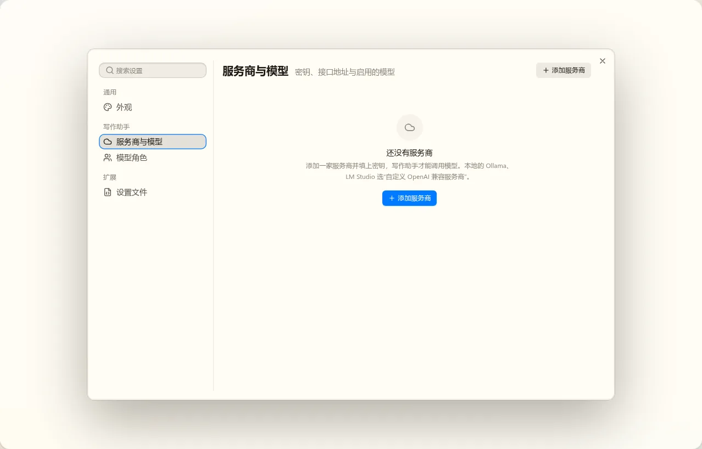

模型服务的设置页：第一轮静态稿
设置窗口、标题区、页内列表、控件都是产品里的真组件，页面内容是草稿，数据是示例：DeepSeek（目录服务商，密钥存在凭据库）、Anthropic（目录服务商，密钥读环境变量）、本地 Ollama（自定义的 OpenAI 兼容服务商，不要密钥）、OpenRouter（还没设置密钥）。已定的事见 t09 README 的决定 9 到 14：服务商列表只列添加过的、地址能直接改、设置窗口 AI 分组下两页。
待定
待定服务商与模型页用哪种版式
两种版式里服务商详情的内容完全一样，区别只在怎么在服务商之间切换。
甲 列表下钻
设置窗口现有的写法（settings-window 输出 19 的 SettingsPageList）：先是服务商列表，点开整页换成详情，标题区“‹ 服务商与模型”返回。列表每行写着密钥状态和启用的模型数，出问题的（没设密钥、检测失败）用颜色标出。
推荐：与设置窗口和给第三方插件的样板一致；详情有整列宽度，模型行的价格、能力不挤。服务商一般只有几家，切换多一次返回不算负担
 列表“添加服务商”在标题区右侧，菜单里是目录服务商与“自定义 OpenAI 兼容服务商”
列表“添加服务商”在标题区右侧，菜单里是目录服务商与“自定义 OpenAI 兼容服务商”
 详情标题区换成服务商名，右侧是删除
详情标题区换成服务商名，右侧是删除
乙 左列表右详情
页面自己分栏：左边约 200px 的服务商列表，右边是详情，切服务商不用返回。窗口本身已有一条分区左栏，这一页就成了两层侧栏；详情窄了约 200px，模型行的模型 id 已经被截断。和输出 19 不一致，要在 Spec 里给这一页开例外。
 左列表右详情同样选中 Anthropic、展开 Claude Sonnet 4.5
左列表右详情同样选中 Anthropic、展开 Claude Sonnet 4.5
待定服务商详情按这几张图的内容与排法做
上面“连接”：密钥一行只写状态（已设置、读哪个环境变量、未设置、不需要），按钮是“设置／更换”“清除”，不显示打码后的密钥；目录服务商的地址只读，自定义服务商的地址与接口格式能改。下面“模型”：每行一个启用开关、名称与 id、能力标签（推理、看图）、上下文窗口、单价（“免费”“单价未知”分开写）、检测结果与检测按钮；点行展开编辑上下文窗口、最大输出、压缩触发点与四项单价（目录模型的窗口与最大输出来自 OMP 目录、只读）。目录服务商没启用的模型收在“目录里还有 N 个模型”里，展开后搜索勾选；自定义服务商有“拉取模型列表”“手动添加”。不同意的地方写在备注里。
 自定义服务商没填上下文窗口的模型在行里标出来（压缩要用，必填）
自定义服务商没填上下文窗口的模型在行里标出来（压缩要用，必填）

开箱还没有服务商时的引导
待定模型角色页按这张图做
梯度四档固定（极轻量、快速、主力、深度），专精里先只有“压缩”，可以自己加（只有自己加的能删）。系统功能用哪个角色写在名字后面（会话标题、审批模型、缺省模型、上下文压缩）。模型下拉只列已启用的模型，可以搜索；没绑的标红，用到它的功能会报错并指向这一页，不换用别的模型。旧应用的写作、叙事、计划、看图几个专精种子没有使用方，不放。
 模型角色“深度”还没绑模型
模型角色“深度”还没绑模型
下一轮再出的
- 设置密钥的对话框（直接贴密钥，或写
env:变量名；读不到变量时怎么提示）。
- 保存方式：密钥写进凭据库是即时的；服务商与模型的配置是即时写入，还是像 Lab 的“模型服务”样板那样改进草稿、点保存栏才写。
- 目录模型的搜索勾选、拉取模型列表的结果对话框、检测失败的说明、删除服务商的确认（列出会变成未绑定的角色）。
- 暗色与窄窗口。